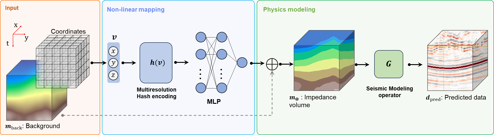

Seismic Reservoir Characterization With Implicit Neural Representations
Juan Romero, Wolfgang Heidrich, Nick Luiken, , Matteo Ravasi
Journal of Geophysical Research: Machine Learning and Computation

Schematic representation of the IntraSeismic framework: the input to IntraSeismic
consists of spatial coordinates that are processed through a nonlinear mapping module. Initially,
this module maps the input coordinates into a higher-dimensional space of trainable feature vec-
tors using multiresolution hash encoding. Subsequently, these vectors are fed to an MLP that
outputs the impedance model. In the subsequent physics modeling module, the output from the
MLP is added to the background model. A modeling operator then computes the predicted data
from the impedance model, which is then incorporated into the loss function.
Abstract
Seismic reservoir characterization refers to a set of techniques aimed at estimating static and/or dynamic physical properties of subsurface geological formations from seismic data, with applications ranging from exploration and development of energy resources, geothermal production, carbon capture and storage, and the assessment of geological hazards. Extracting quantitative information from seismic recordings, such as an acoustic impedance model, is however a highly ill-posed inverse problem due to the band-limited and noisy nature of the seismic data. As such, seismic inversion techniques strongly rely on additional prior information that penalizes (or promotes) some features in the recovered model. This paper introduces IntraSeismic, a novel hybrid seismic inversion method that combines implicit neural representations as an effective way to parameterize a subsurface model with the physics of the seismic modeling operator. We demonstrate its effectiveness in both pre-stack and 3D/4D post-stack seismic inversion using synthetic and field data sets. Key features of IntraSeismic are (a) unparalleled performance in 2D and 3D pre-stack/post-stack dynamic and static seismic inversion, (b) rapid convergence rates, (c) ability to seamlessly include hard constraints (i.e., well data) and perform uncertainty quantification, and (d) potential data compression and fast randomized access to specific portions of the inverted model.
Paper
Paper [Romero2024INR.pdf (7.0 MB)]